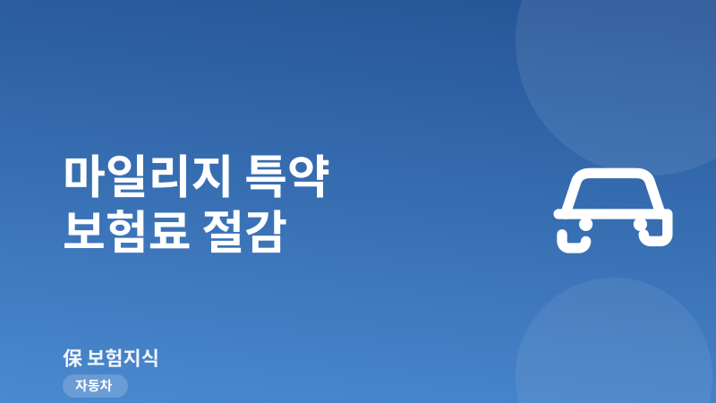
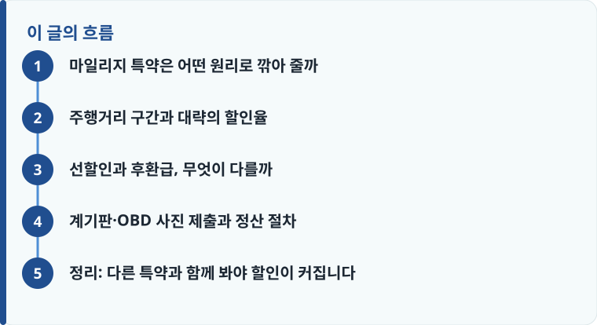

마일리지 특약은 연간 주행거리가 짧을수록 보험료를 할인해 주는 제도로, 구간에 따라 대략 2~40% 안팎까지 혜택이 벌어집니다.
선할인은 가입 때 예상거리로 미리 깎고, 후환급은 만기 뒤 실제 거리로 정산해 돌려주는 방식이라 나에게 맞는 쪽을 골라야 합니다.
가입 시점과 만기 시점 계기판(또는 OBD·블랙박스) 사진을 정해진 기간 안에 올리지 않으면 할인이 취소될 수 있습니다.
마일리지 특약은 어떤 원리로 깎아 줄까
마일리지 특약은 이름 그대로 ‘많이 타지 않는 사람은 사고 확률도 낮다’는 전제로 보험료를 할인해 주는 특별약관입니다. 자동차보험료는 차량 종류, 운전자 나이, 사고 이력 같은 여러 요소로 정해지는데, 주행거리는 그중에서도 사고 위험과 직접 연결되는 항목으로 봅니다. 보험료가 왜 사람마다 달라지는지 전체 그림이 궁금하다면 보험료가 달라지는 이유를 먼저 읽으면 마일리지 할인의 위치를 이해하기 쉽습니다.
핵심은 ‘연간 주행거리’를 기준으로 삼는다는 점입니다. 1년 동안 얼마를 탔는지를 계기판 숫자로 확인해 구간을 나누고, 적게 탈수록 할인 폭을 키웁니다. 실제로 출퇴근을 대중교통으로 하고 주말에만 차를 쓰는 사람이라면 이 특약 하나로 기본 보험료의 상당 부분을 줄일 수 있습니다. 반대로 영업·배달처럼 주행거리가 긴 운전자에게는 할인이 거의 없거나 신청 자체가 큰 의미가 없을 수 있습니다.
주행거리 구간과 대략의 할인율
대부분의 상품은 연간 주행거리를 여러 구간으로 나눠 할인율을 정합니다. 예를 들어 2,000km 이하 같은 최저 구간은 할인율이 가장 커서 30~40% 안팎에 이르는 경우가 있고, 5,000km, 7,000km, 1만km, 1만2,000km, 1만5,000km, 1만7,000km처럼 구간이 올라갈수록 할인율은 단계적으로 낮아집니다. 보통 연 1만7,000km를 넘어서면 할인 대상에서 빠지는 식으로 상한이 정해져 있습니다.
여기서 주의할 점은 구간 경계에서 할인율이 툭 떨어진다는 것입니다. 예를 들어 1만km 이하 구간과 1만2,000km 이하 구간의 할인율 차이가 몇 퍼센트포인트씩 벌어지기 때문에, 실제 주행거리가 경계선 근처라면 며칠 덜 타는 것만으로 할인 구간이 바뀔 수 있습니다. 정확한 구간 숫자와 할인율은 보험사와 가입 시점에 따라 다르므로, 견적을 볼 때 자동차보험 기본 구조와 함께 상품설명서의 마일리지 특약 표를 꼭 확인하는 것이 좋습니다.

선할인과 후환급, 무엇이 다를까
같은 마일리지 특약이라도 할인을 받는 시점이 다릅니다. ‘선할인’은 가입할 때 1년 동안 예상 주행거리를 적어 내고 그만큼을 보험료에서 미리 깎아 주는 방식입니다. 당장 내는 보험료가 줄어 부담이 가볍지만, 만기 때 실제 거리가 신고한 예상거리보다 많으면 할인받았던 금액의 일부를 다시 토해내야 할 수 있습니다.
‘후환급’은 반대입니다. 가입 시점에는 정상 보험료를 다 내고, 1년 뒤 실제 주행거리를 확인해 해당 구간의 할인액만큼을 돌려받는 방식입니다. 처음 내는 금액은 크지만 실제 탄 만큼만 정산하므로 예상거리를 잘못 적어 불이익을 볼 걱정이 없습니다. 주행거리를 가늠하기 어렵거나 해마다 편차가 큰 사람은 후환급이, 패턴이 일정하고 당장 보험료를 낮추고 싶은 사람은 선할인이 무난합니다.
가볍게 예를 들어 보겠습니다. 기본 보험료가 연 70만 원인 운전자가 연간 5,000km 구간에서 20% 안팎의 할인을 받는다면 약 14만 원을, 2,000km 이하 최저 구간에서 30% 이상을 적용받는다면 20만 원 넘게 아낄 수 있습니다. 반대로 예상거리를 낮게 신고해 선할인을 크게 받아 놓고 실제로 1만km를 넘겼다면, 만기 정산에서 할인 폭이 줄어 그만큼 추가로 부담해야 합니다. 그래서 예상거리는 ‘아끼고 싶은 목표’가 아니라 ‘실제 탈 것 같은 거리’로 잡는 것이 정산 부담을 줄이는 방법입니다.
작성·검수 기준
이 글은 특정 보험사 상품을 권유하기 위한 것이 아니라, 자동차보험 마일리지 특약의 일반적인 구조와 신청·정산 흐름을 설명하기 위해 작성했습니다. 주행거리 구간, 할인율, 사진 제출 기한, 선할인·후환급 처리 방식은 보험사와 가입 시점의 약관에 따라 달라질 수 있습니다.
정확한 할인율과 조건은 본인 증권의 약관과 상품설명서, 그리고 보험료 산정 요소를 함께 확인하는 것이 가장 정확합니다.
계기판·OBD 사진 제출과 정산 절차
마일리지 할인은 ‘실제로 적게 탔다’는 것을 증명해야 확정됩니다. 증명 방법은 크게 세 가지입니다. 가장 흔한 방식은 계기판(주행거리계) 사진을 찍어 올리는 것이고, 차량 진단단자에 꽂는 OBD 장치나 통신형 블랙박스를 연결해 주행거리를 자동으로 전송받는 방식도 있습니다. OBD·블랙박스 연동은 사진을 깜빡할 일이 없다는 장점이 있어 실수로 할인을 놓치는 위험이 적습니다.
- 가입 직후 정해진 기간 안에 계기판 숫자가 선명하게 보이도록 ‘가입 시점 사진’을 제출합니다.
- OBD나 통신형 블랙박스를 쓴다면 장치를 등록해 자동 전송을 켜 둡니다.
- 1년 뒤 만기가 다가오면 안내에 따라 ‘만기 시점 계기판 사진’을 다시 제출합니다.
- 보험사가 두 시점의 거리 차이로 연간 주행거리를 계산해 할인 구간을 확정합니다.
- 선할인은 초과 시 차액을 정산하고, 후환급은 확정된 할인액을 계좌로 돌려받습니다.
사진 제출 기한을 놓치면 할인이 아예 취소되는 경우가 많으니, 가입 안내 문자나 앱 알림을 무시하지 않는 것이 중요합니다. 특히 중고차를 사서 계기판을 교체했거나 숫자가 흐릿하게 찍히면 심사가 지연될 수 있으므로, 날짜가 함께 보이도록 또렷하게 촬영해 두는 습관이 도움이 됩니다.
정리: 다른 특약과 함께 봐야 할인이 커집니다
마일리지 특약은 그 자체로도 유용하지만, 다른 할인 특약과 겹쳐 넣을 때 효과가 커집니다. 블랙박스 장착 할인, 자녀할인(자녀 나이 특약), 안전운전(운행기록) 할인 등을 함께 적용하면 각 할인이 더해져 전체 보험료가 눈에 띄게 줄어듭니다. 다만 특약마다 조건과 제출 서류가 다르므로, 견적 단계에서 어떤 할인을 동시에 받을 수 있는지 설계사나 다이렉트 화면에서 확인하는 것이 좋습니다. 자동차보험과 함께 사고 처리를 보완하는 운전자보험도 역할이 다르니 구분해 두면 보장 공백을 줄일 수 있습니다.
또한 마일리지 할인은 매년 갱신 때 실제 주행거리로 다시 정산되므로, 갱신 시점마다 조건을 비교하는 습관이 필요합니다. 보험료가 오르내리는 이유가 궁금하다면 갱신형·비갱신형 비교를 함께 보면 갱신 정산의 흐름을 이해하기 쉽습니다. 다른 보험 정보 글이 궁금하다면 보험지식 블로그에서 이어 읽어 보세요. 가입 전에는 반드시 약관과 상품설명서를 확인하는 것이 가장 안전한 방법입니다.